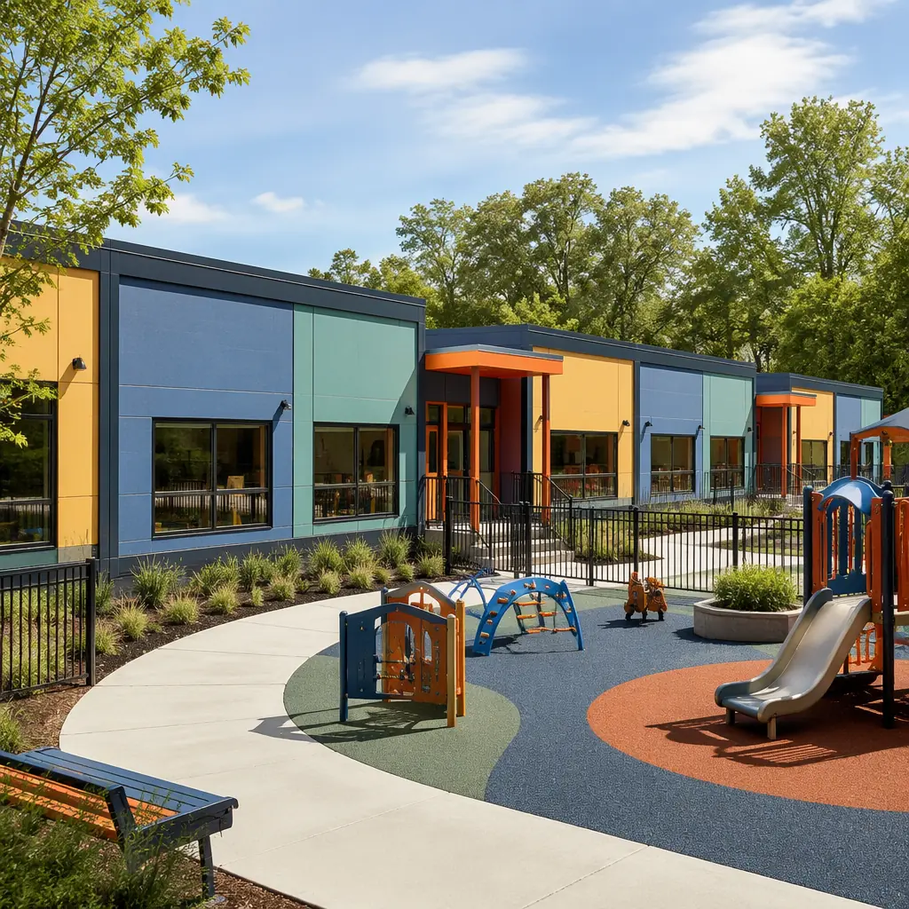
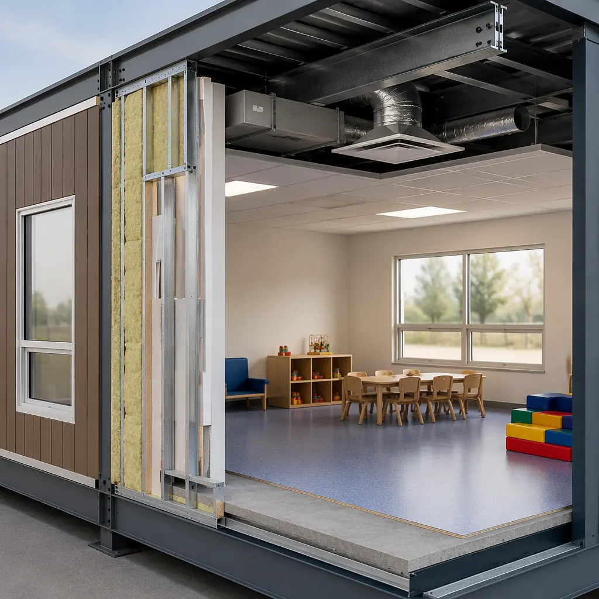
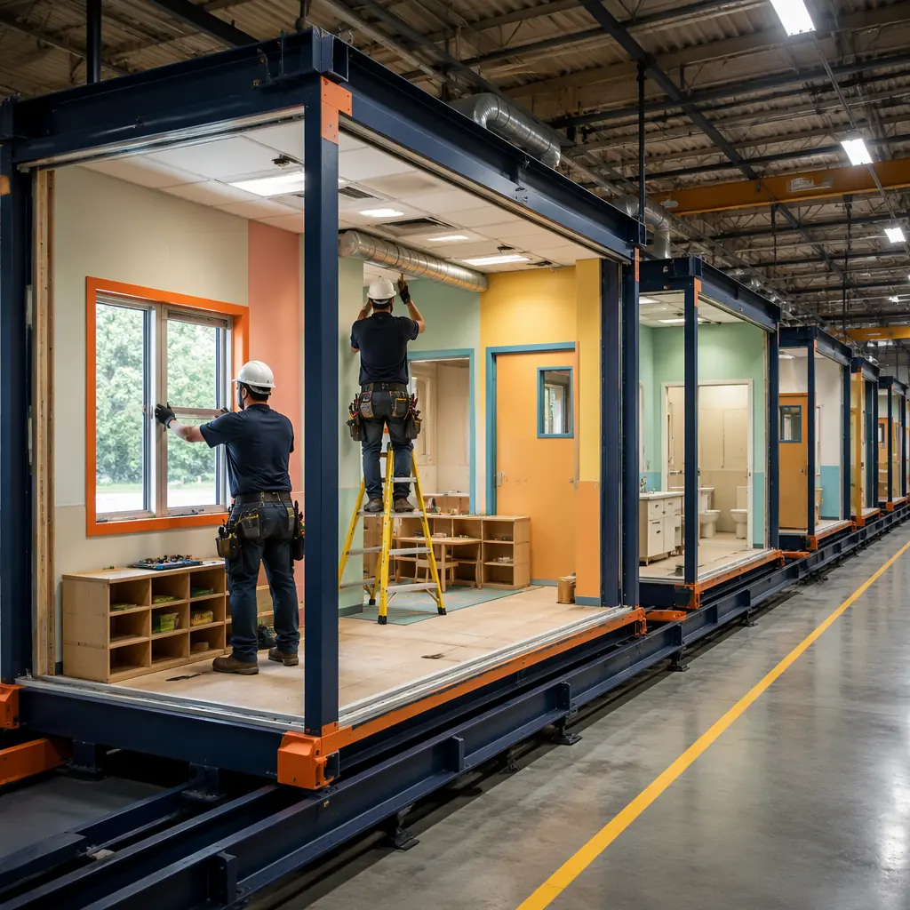
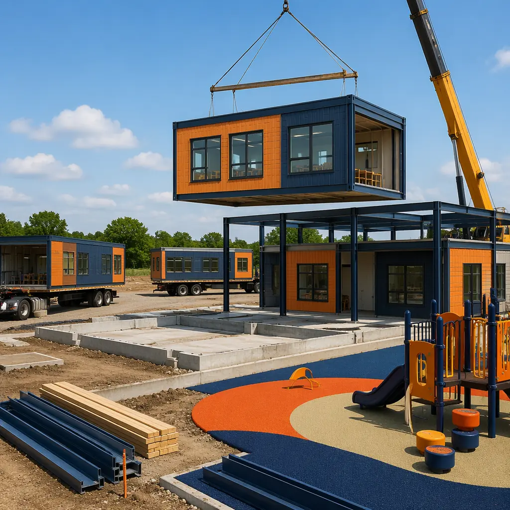

The American childcare infrastructure is in a capacity crisis that conventional construction cannot solve at the speed or cost required. The US Department of Health and Human Services reports that 51% of Americans live in childcare deserts — census tracts where there are more than three children under age five for every licensed childcare slot. The Bipartisan Policy Center estimates that the US economy loses $122 billion annually in lost earnings, productivity, and tax revenue due to inadequate childcare infrastructure. Meanwhile, the expiration of $24 billion in pandemic-era childcare stabilization funding in September 2024 triggered a wave of facility closures: Child Care Aware of America documented 16,000 childcare center closures in the 12 months following funding expiration, concentrated in low-income and rural communities where the childcare desert problem was already most acute. Modular daycare and early childhood education construction compresses the delivery timeline from 12–18 months to 7–10 months while meeting the specific child-safe design standards, HVAC ventilation requirements, outdoor play area integration, and state licensing compliance criteria that distinguish early childhood facilities from general commercial construction. For education operators evaluating facility delivery methods, see our guide to modular K-12 school construction and our analysis of modular university academic building construction — building types that share regulatory and operational requirements with early childhood facilities.

Why Daycare Construction Is Different — The Regulatory Framework That Conventional Construction Struggles to Meet
Early childhood facilities operate under a regulatory framework that is simultaneously more prescriptive and more fragmented than any other commercial building type. Unlike K-12 schools (governed by state departments of education with relatively standardized facility guidelines) or healthcare facilities (governed by FGI Guidelines and Joint Commission standards), childcare facilities are regulated by state departments of human services or child welfare agencies — each of the 50 states maintains its own licensing code with different requirements for square footage per child (ranging from 25 to 50 sq ft per child for indoor space), toilet fixture ratios (typically one toilet and one sink per 10–15 children), outdoor play area dimensions (usually 75–100 sq ft per child), and kitchen/food preparation facility requirements that range from a warming kitchen for catered meals to a full commercial kitchen for on-site meal preparation.
This state-level regulatory fragmentation creates a specific challenge for childcare operators expanding across state lines: a facility design that satisfies California's Title 22 childcare center requirements (which mandate 35 sq ft of indoor activity space per child and specific teacher-child ratios that affect classroom sizing) may not satisfy Texas's DFPS minimum standards (which require 30 sq ft per child but different requirements for toilet and handwashing fixture placement relative to classrooms). For childcare operators pursuing multi-site expansion — a growing trend as private equity enters the childcare sector, with groups like KinderCare (2,000+ centers), Learning Care Group (1,100+ centers), and Bright Horizons (1,000+ centers) expanding through acquisition and new construction — the regulatory fragmentation means that each new center requires a separate design review and licensing approval cycle, adding 4–8 months to the project timeline regardless of construction method. The modular advantage in this environment is that a prototype classroom module design can be pre-qualified with the state licensing agency — the classroom dimensions, toilet room configuration, window area for natural light, and door hardware specifications are reviewed once and applied to every module in the project. When the same prototype is deployed in a different state, only the state-specific variations need to be re-reviewed rather than the entire design package. For a broader discussion of regulatory navigation in modular construction, see our developer's guide to modular construction permitting and zoning.

Indoor Environmental Quality — The HVAC, Acoustic, and Lighting Standards That Define Childcare Facilities
Early childhood facilities have indoor environmental quality requirements that are more demanding than K-12 schools because the occupant population (infants through five-year-olds) has developing respiratory and immune systems, lower tolerance for thermal discomfort, and greater sensitivity to acoustic distraction than older children or adults. The Environmental Protection Agency's IAQ Tools for Schools framework, adapted for early childhood settings, recommends 15 cubic feet per minute of outdoor air per occupant (compared to 10–15 CFM/person for adult office spaces), MERV 13 filtration on all HVAC air handlers serving occupied spaces, and relative humidity maintained between 40–60% to suppress viral transmission while preventing mold growth. These requirements translate to HVAC system sizing that is 20–30% larger than a comparably sized office building, and the ductwork distribution must deliver the ventilation rates to individual classrooms rather than averaging across an open floor plan — each classroom is a separate thermal zone with its own thermostat and ventilation balancing damper.
In conventional construction, achieving the per-classroom HVAC zoning requires coordination between the mechanical contractor (installing the air handling units and ductwork), the controls contractor (installing the thermostats, VAV boxes, and building automation system), and the balancing contractor (measuring airflow at each diffuser and adjusting dampers) — three separate trade contractors working sequentially, with each phase dependent on the previous phase being complete. The testing and balancing alone typically requires 2–3 weeks of on-site work for a 10-classroom center, and corrections discovered during testing (undersized ducts, incorrectly wired damper actuators, control sequence programming errors) add 2–4 additional weeks of rework. In modular construction, the classroom module is built, ducted, wired, and balanced in the factory: the thermostat is installed, the VAV box is connected to the factory-installed ductwork, the airflow is measured and balanced at each diffuser, and the balancing report is included in the module's quality control documentation package. On-site commissioning is reduced to verifying that the module-to-module duct connections are sealed and that the building-level air handling unit delivers the design airflow to the module's zone connection point — typically 2–3 days of on-site work rather than 2–3 weeks. For a detailed engineering discussion of HVAC and MEP systems in modular construction, see our guide to modular MEP systems integration.
Acoustic design for early childhood environments. The acoustic environment in a daycare center directly affects both child development outcomes and staff retention. The American Speech-Language-Hearing Association (ASHA) recommends that background noise levels in early childhood classrooms not exceed 35 dBA, and that reverberation time (RT60) not exceed 0.6 seconds — standards that are more stringent than those for adult office environments (45–50 dBA background noise, RT60 of 0.8–1.0 seconds). A daycare classroom with 15–20 children engaged in play activities can generate noise levels of 75–85 dBA, and this noise transmits through walls to adjacent classrooms if the wall assemblies are not specifically designed for acoustic separation. Modular construction addresses this through factory-installed STC 55+ wall assemblies with staggered stud construction, acoustic insulation in wall cavities, and acoustic sealant at all perimeter joints — assemblies that are tested in the factory rather than discovered to be inadequate during post-occupancy noise complaints. For a comprehensive analysis of acoustic performance in modular buildings, see our analysis of modular building acoustic performance and design flexibility.
Site Integration — Outdoor Play Areas, Drop-Off Circulation, and Security
A daycare center's site design is as important as its building design — and more constrained by regulatory requirements. State licensing codes typically require a minimum of 75–100 sq ft of outdoor play space per child, with the play area directly accessible from the classroom (not across a parking lot or public walkway), enclosed by a minimum 4-foot fence with self-closing, self-latching gates, and surfaced with impact-attenuating material (engineered wood fiber at 12-inch depth, poured-in-place rubber, or synthetic turf with shock pad) that meets ASTM F1292 fall height protection standards for the installed play equipment. Additionally, the site must provide a separated drop-off and pick-up circulation route that prevents vehicles from backing into pedestrian paths, with a minimum of one loading space per 10 children (per ITE Trip Generation Manual data for daycare facilities).
These site requirements create a development challenge: a 100-child daycare center requires approximately 10,000 sq ft of building area (at 100 sq ft per child, the upper end of licensing requirements) plus 7,500–10,000 sq ft of outdoor play area plus 2,500–3,000 sq ft of parking and drop-off circulation — a total site area of 20,000–23,000 sq ft, or roughly 0.5 acres. In suburban and urban locations where land costs $15–$40 per square foot, the land acquisition cost alone is $300,000–$900,000 — and the site must be zoned to permit childcare use, which excludes many commercially zoned parcels that would otherwise be ideal locations near employment centers. Modular construction provides an advantage in site-constrained environments because the building footprint can be precisely dimensioned to maximize the remaining site area for outdoor play while the modular delivery method reduces on-site construction duration from 8–12 months to 8–12 weeks — a critical consideration for daycare operators who cannot afford extended construction periods during which the facility generates no revenue. For operators considering site acquisition and facility development, see our guide to modular construction RFP and procurement for a framework to evaluate site + building delivery proposals.

Cost Comparison — Modular vs. Conventional Daycare Construction
For a prototypical 10,000 sq ft daycare center serving 100 children, the construction cost comparison between modular and conventional delivery methods breaks down across the cost categories that differentiate the two approaches:
| Cost Category | Conventional | Modular | Difference |
|---|---|---|---|
| Site work & foundation | $280,000 | $280,000 | Same |
| Building structure & enclosure | $1,050,000 | $1,150,000 | +$100,000 |
| MEP systems (factory-installed) | $520,000 | $410,000 | −$110,000 |
| Interior finishes | $380,000 | $320,000 | −$60,000 |
| General conditions (site supervision, temp facilities) | $180,000 | $65,000 | −$115,000 |
| Playground & site amenities | $150,000 | $150,000 | Same |
| Design, permitting, licensing | $210,000 | $210,000 | Same |
| Total hard + soft costs | $2,770,000 | $2,585,000 | −$185,000 |
| Cost per square foot | $277 | $259 | −7% |
The modular approach delivers a 7% total project cost reduction primarily through factory MEP installation productivity ($110,000 savings on a scope that is 25–35% more efficient in a factory environment) and dramatically reduced on-site general conditions ($115,000 savings from compressing 10 months of site supervision to 10 weeks). When construction financing costs are included — 8 fewer months of construction loan interest at 7.5% on $2.1 million of drawn capital, or approximately $105,000 in additional savings — the total modular cost advantage approaches 11%. For a comprehensive framework evaluating modular construction cost across building types, see our 2026 modular construction cost per square foot guide.

Is Modular Right for Your Childcare Facility?
Modular construction is particularly well-suited to the specific operational profile of the modern childcare sector: multi-site operators standardizing center formats across markets, school districts adding early childhood classrooms to elementary school campuses, and employers developing on-site childcare facilities as a workforce recruitment and retention benefit. The childcare construction market is projected to reach $8.7 billion by 2028 (IBISWorld), driven by the $122 billion annual economic cost of childcare gaps, the 51% childcare desert statistic that has made childcare facility development a bipartisan legislative priority, and the growing recognition by employers that on-site childcare reduces absenteeism by 20–30% and improves employee retention by 35–40% (according to a Bright Horizons survey of Fortune 500 employers). For the childcare operators, school districts, and employers who evaluate modular delivery against these specific requirements — and for the manufacturers who invest in understanding the unique regulatory, HVAC, acoustic, and site integration demands of early childhood facilities — modular construction offers a timeline, cost, and quality control proposition that conventional construction cannot match for this building type.